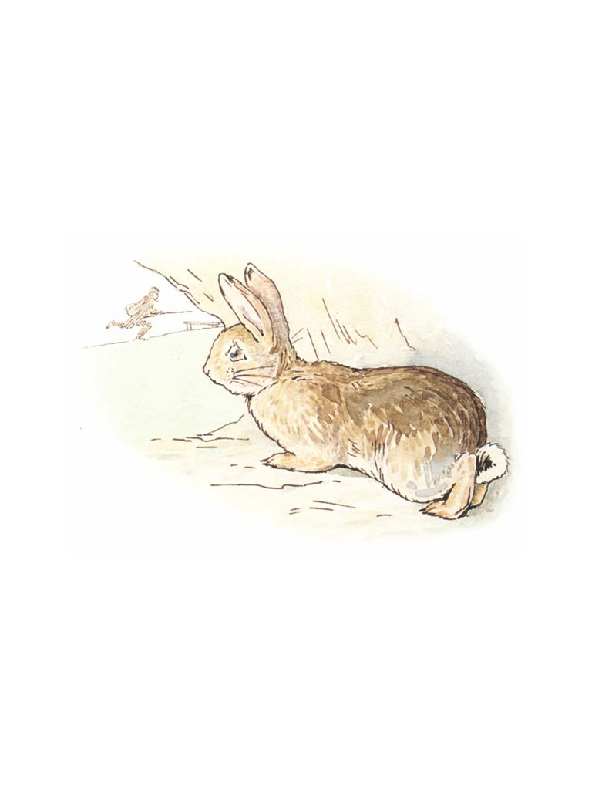

🏠
日
月
縦書き／横書き

| 【対訳】ピーターラビット ⑥ とっても悪いうさぎのおはなし -THE STORY OF A FIERCE BAD RABBIT- | |
| ビアトリクス・ポター | |
これは、怖い悪いうさぎです。この荒々しいヒゲをご覧なさい。それにツメもとがっているし、しっぽも上に向けられています。
This is a fierce bad Rabbit; look at his savage whiskers and his claws and his turned-up tail.
これは、おとなしい良いうさぎです。良いうさぎはおかあさんからニンジンをもらいました。
This is a nice gentle Rabbit. His mother has given him a carrot.
悪いうさぎは、自分もニンジンが食べたくなりました。
The bad Rabbit would like some carrot.
でも、悪いうさぎは「ください」とは言いません。いきなりニンジンを横取りします。
He doesn't say "Please." He takes it!
おまけに、良いうさぎをとてもひどくひっかきました。
And he scratches the good Rabbit very badly.
良いうさぎはすごすごと逃げ出して、穴の中に隠れます。良いうさぎはとてもがっかりしました。
The good Rabbit creeps away and hides in a hole. It feels sad.
これは鉄砲を持った男の人です。
This is a man with a gun.
鉄砲を持った男の人は、何かがベンチにすわっているのを見つけました。ずいぶんおかしな鳥だなぁ......とその人は思いました。
He sees something sitting on a bench. He thinks it is a very funny bird!
男の人は、木のうしろに隠れながら、そっと近づいていきました。
He comes creeping up behind the trees.
それから、鉄砲を撃ちました――。ズドン！
And then he shoots? BANG!
どうなったんでしょうか？
This is what happens?
でも、その人がベンチのそばにかけつけてみると、そこにあったのはこんなものだけでした。
But this is all he finds on the bench when he rushes up with his gun.

良いうさぎは穴から外をのぞきました。
The good Rabbit peeps out of its hole ......
すると、悪いうさぎがさっと走りすぎていきました。――ヒゲもしっぽもなくして、つるっとなった悪いうさぎが。
おしまい
...... and it sees the bad Rabbit tearing past? without any tail or whiskers!
【対訳】ピーターラビットシリーズ ⑥
とっても悪いうさぎのおはなし
－THE STORY OF A FIERCE BAD RABBIT－
発行日 ２０１４年２月11
日
著 者 ビアトリクス・ポター
発行者 赤井 仁
発行所 ゴマブックス株式会社
〒１０７－００５２
東京都港区赤坂８－５－40
ペガサス青山７１０
(c) GOMA－BOOKS Co.,ltd. 2014